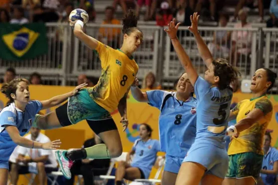

Pop's Sports
O Pop's Sports é um site dedicado a trazer informações sobre Futebol, Vôlei e Handebol. O layout é intuitivo e fácil de navegar, permitindo que os usuários acessem rapidamente o conteúdo de seu interesse. Seja você um aficionado por Futebol, Vôlei ou Handebol, ou um novato que deseja conhecer mais sobre os nossos esportes favoritos, o Pop's Sports é o lugar ideal para se informar.
Conteúdos em Destaque
Futebol
O futebol é um esporte popular em todo o mundo, que tem suas raízes na Inglaterra do século XIX. Ele foi desenvolvido a partir de jogos populares praticados em escolas e universidades britânicas, que consistiam em chutar uma bola em direção a um objetivo. A Football Association criou as primeiras regras oficiais para o jogo em 1863, e o futebol rapidamente se tornou popular em todo o Reino Unido e depois se espalhou pelo mundo. Hoje, o futebol é o esporte mais popular do mundo, uma paixão compartilhada por pessoas de todas as idades, origens e culturas, e é considerado uma das principais formas de entretenimento em todo o mundo.
Vôlei
O vôlei é um esporte popular em todo o mundo, que teve sua origem nos Estados Unidos no final do século XIX. Ele foi criado pelo professor William G. Morgan, que buscava um esporte menos violento que o basquete para praticar em sua escola. O vôlei é jogado com duas equipes de seis jogadores cada, que tentam enviar a bola por cima da rede para o campo do adversário, sem deixá-la cair no chão. Ao longo dos anos, o vôlei evoluiu em um esporte de alto desempenho, com jogos emocionantes e técnicas cada vez mais avançadas. Hoje, o vôlei é um esporte olímpico, e é jogado em todo o mundo, desde as quadras de escolas e parques até grandes arenas. É um esporte que promove o trabalho em equipe, a coordenação e a habilidade física e mental dos jogadores.
Handebol
O handebol é um esporte de equipe que se originou na Europa no início do século XX. Ele foi criado para ser jogado em quadras menores do que as utilizadas no basquete, com o objetivo de proporcionar um esporte de salão para o inverno europeu. O handebol é jogado com duas equipes de sete jogadores cada, que tentam marcar gols no gol adversário, usando as mãos para passar a bola entre si. Ao longo dos anos, o handebol evoluiu em um esporte rápido e emocionante, com jogos de alto desempenho e técnicas cada vez mais avançadas. Hoje, o handebol é um esporte olímpico e é jogado em todo o mundo, tanto por homens quanto por mulheres. É um esporte que exige habilidades físicas e mentais, como velocidade, agilidade, coordenação e estratégia de equipe.
